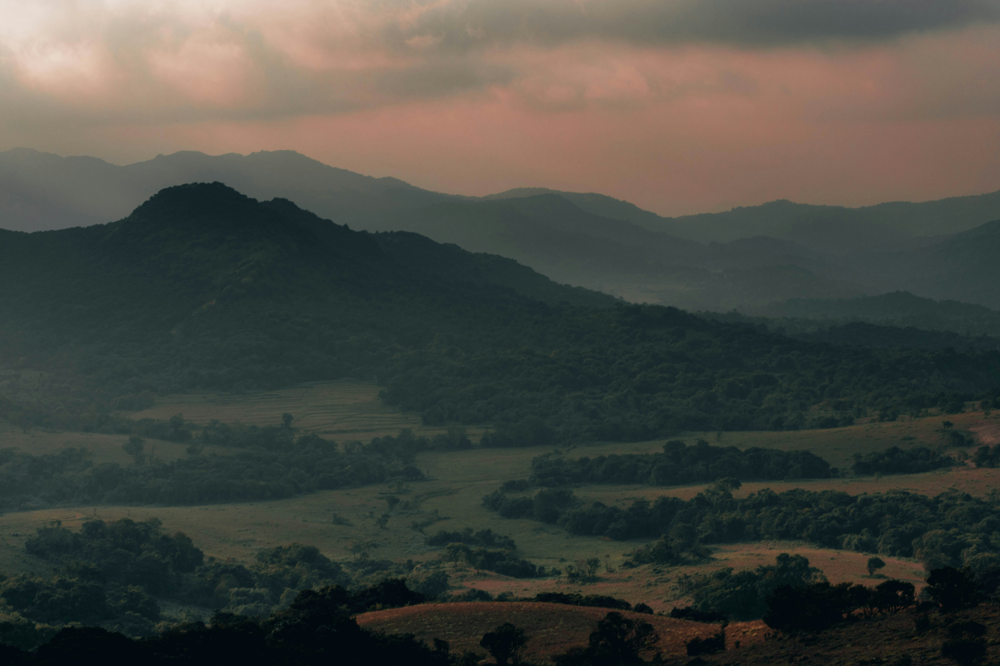
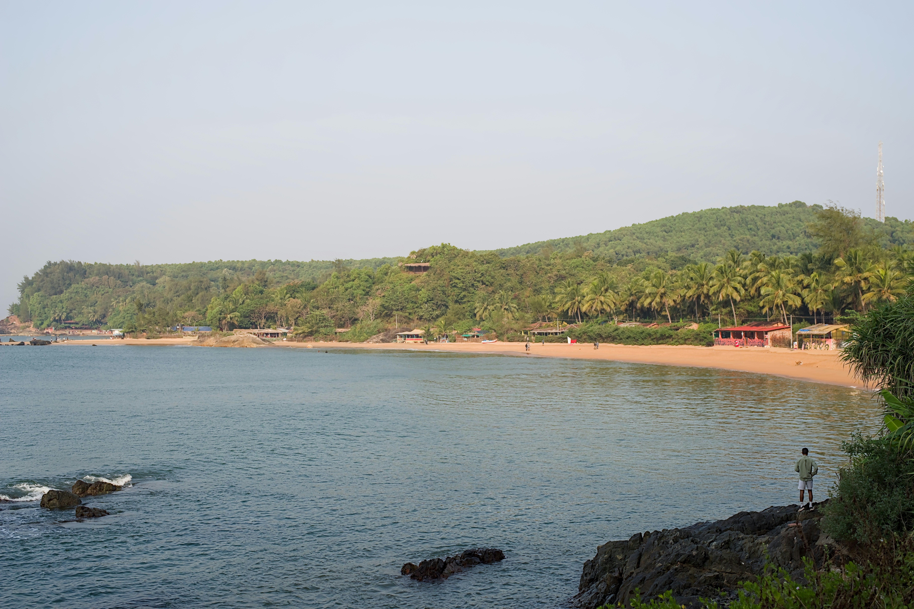
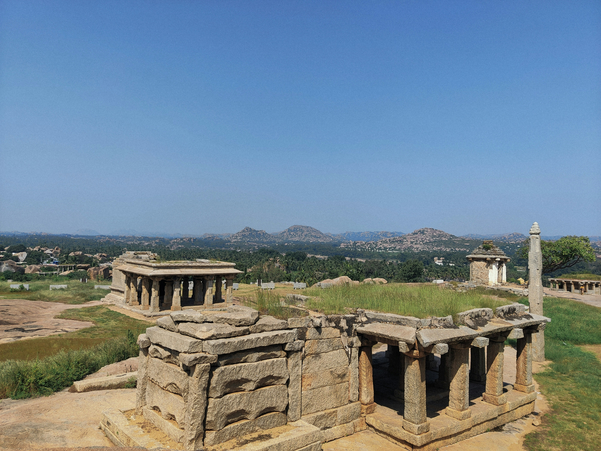
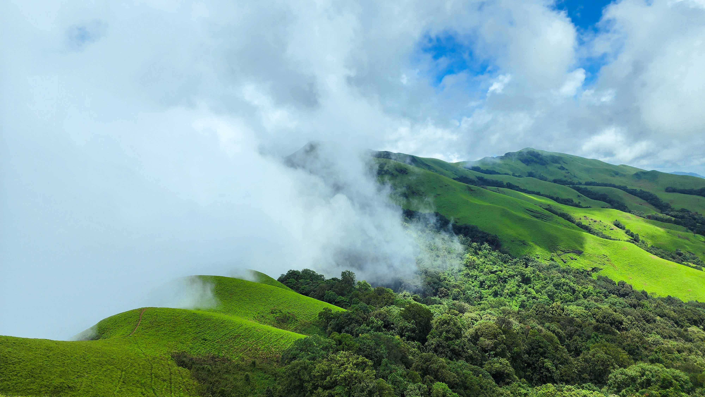
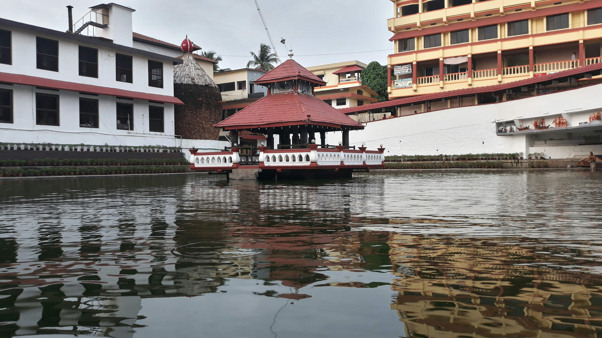
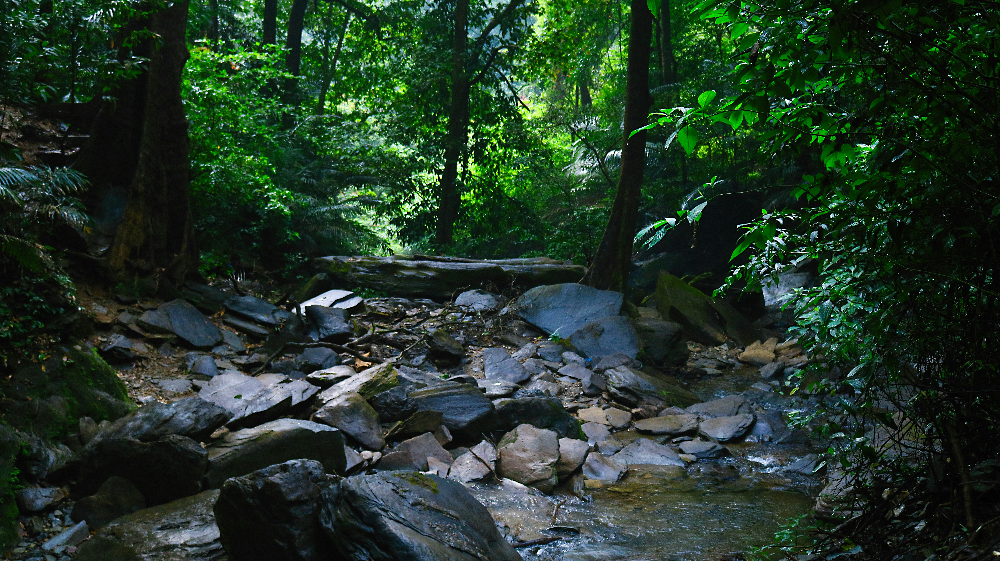

Explore hidden gems, beautiful landscapes, and unforgettable experiences.
Explore DestinationDiscover beautiful places, rich history and unforgettable experiences.






Simple tips to make your Karnataka trip easier and more enjoyable.
Check the weather before planning your trip and pack accordingly.
Carry comfortable clothes, shoes, water and the essentials you need.
Plan your destinations and travel route before starting your journey.
WanderWise is a travel guide created to help you discover the beautiful and lesser-known destinations of Karnataka.
From peaceful hill stations and beautiful beaches to historical places and lush forests, explore Karnataka one destination at a time.
Plan your journey and explore the location before you travel.
Coorg is known for its beautiful hills, coffee plantations, waterfalls and peaceful natural surroundings.
Nature, Photography and Relaxation
October to March
2–3 Days
Gokarna is a beautiful coastal destination known for its beaches, peaceful surroundings and scenic landscapes.
Beaches, Relaxation and Photography
October to March
2–3 Days
Hampi is a historic destination famous for its ancient temples, magnificent ruins, stone monuments and beautiful landscapes.
History, Architecture and Photography
October to February
2–3 Days
Chikmagalur is a beautiful hill station known for its coffee plantations, misty mountains, waterfalls and peaceful surroundings.
Coffee, Nature and Trekking
September to March
2–3 Days
Udupi is a beautiful coastal destination known for its temples, beaches, traditional culture and delicious coastal cuisine.
Temples, Beaches and Food
October to March
2–3 Days
Agumbe is a beautiful rainforest destination known for its lush forests, waterfalls, scenic views and stunning sunsets.
Nature, Trekking and Photography
October to February
2–3 Days
Explore Karnataka through a beautiful journey of hills, beaches, history and nature.
Start your journey
Explore coffee hills
Enjoy the misty hills
Discover the coast
Relax by the beach
Discover history
A few interesting facts about exploring Karnataka.
Discover peaceful hills, coffee plantations and misty landscapes.
Explore beautiful beaches and scenic coastal destinations.
Experience ancient monuments, temples and historical places.
Tell us what kind of Karnataka adventure you are looking for.
Have a question or want to share your Karnataka travel experience? We'd love to hear from you.
hello@wanderwise.com
@wanderwise
Tell us about your favourite place in Karnataka.